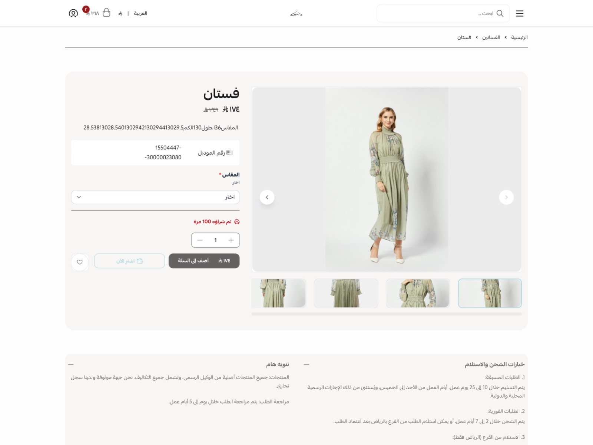
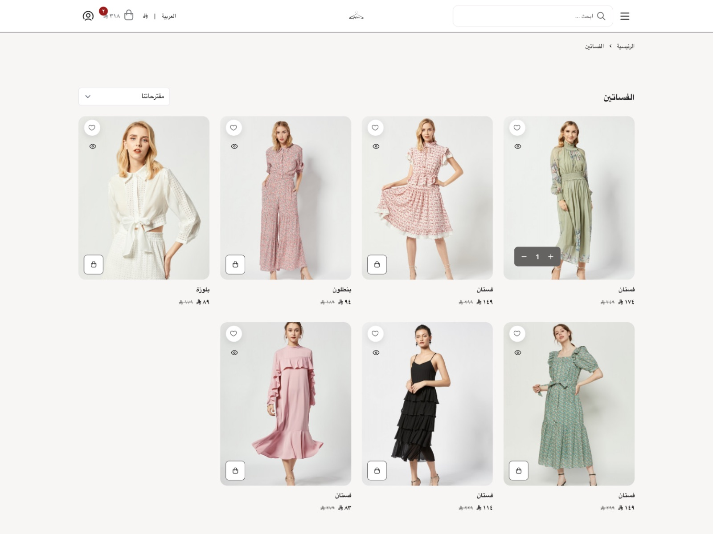
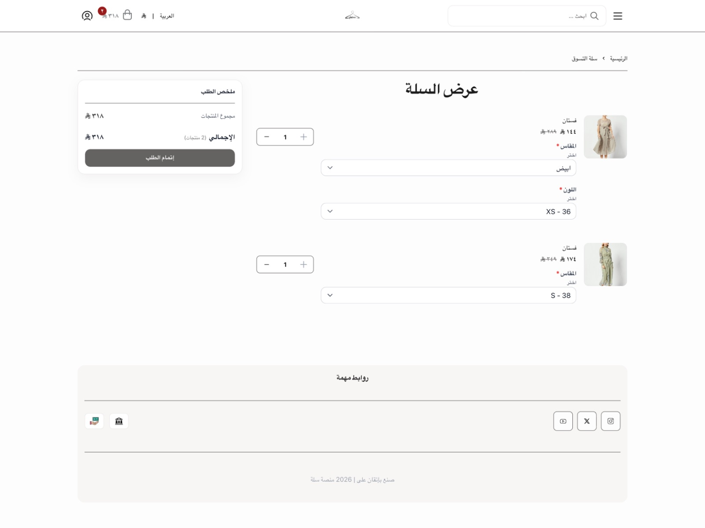

البداية السريعة
- بعد تثبيت الثيم افتح المتجر ← تخصيص الثيم.
- افتح خيارات التصميم واضغط «حفظ التغييرات» مرة واحدة حتى لو لم تغيّر شيئًا، لتُطبَّق القيم الافتراضية للثيم.
- من «الهوية والألوان» اضبط لون خلفية الأزرار ولون نصّ الأزرار معًا. ألوان التصميم الأصلي: الخلفية #646361 والنص #FDFDFD.
- من عناصر الصفحة أضف أقسام الرئيسية ورتّبها بالسحب، وعبّئ صورها ونصوصها.
- أضف قائمة التذييل من لوحة سلة ← القوائم لتظهر «روابط مهمة».
- من إعدادات سلة فعّل التقييمات في صفحة المنتج، وكود الخصم في السلة، وبرنامج الولاء إن كنت تستخدمه. الثيم جاهز لها.
أقسام الصفحة الرئيسية
تضاف من عناصر الصفحة ← إضافة عنصر جديد، وتُرتّب بالسحب، ويمكن تكرار القسم أكثر من مرة.
غلاف الصفحة الرئيسية
- تنقّل تلقائي بين الصورعند تفعيله يظهر زر لإيقاف التنقّل، ويتوقّف تلقائيًا لمن فعّل تقليل الحركة في جهازه. يُنصح بإبقائه معطّلًا.
- قلوب مرسومة حول العبارةقلبان بخطّ اليد بلون العبارة، فوقها وتحتها. يظهران فقط مع الصور التي فيها عبارة.
- العناصرقائمة عناصر تضيفها بزر «إضافة».
- صورة الغلاف (الجوال)* المقاس المناسب للصورة هو 900×1260 بكسل
- صورة الغلاف (اللابتوب)اختيارية. تظهر من عرض 1024 بكسل وأكثر، حيث يكون الغلاف أفقيًا. المقاس المناسب 1240×800 بكسل. اتركها فارغة لتُستخدم صورة الجوال مقصوصة.
- وصف الصورة لقارئ الشاشةاتركه فارغًا إذا كانت الصورة زخرفية ولا تحمل معنى إضافيًا للنص الظاهر عليها.
- العبارة الظاهرة على الصورةتظهر في منتصف أسفل الصورة باللون الأبيض.
- رابط الصورةعند إضافته تصبح الصورة كلها قابلة للنقر.
- شريط المعلومات — العنصر الأوليظهر في أول الشريط أسفل الصورة (يمينه في العربية).
- شريط المعلومات — العنصر الأوسطيظهر في منتصف الشريط أسفل الصورة.
- شريط المعلومات — العنصر الأخيريظهر في آخر الشريط أسفل الصورة (يساره في العربية).
هايلايت
- العنوان (اختياري)
- العناصرقائمة عناصر تضيفها بزر «إضافة».
- اسم الهايلايتيظهر تحت الدائرة. كلمة أو كلمتان.
- صورة الدائرة (اختيارية)مربعة. إن تُركت فارغة تُستخدم صورة القصة الأولى.
- صورة القصة 1* المقاس المناسب 1080×1920 بكسل (طولية). الصور الفارغة تُتخطّى.
- صورة القصة 2
- صورة القصة 3
- صورة القصة 4
- صورة القصة 5
- صورة القصة 6
- المنتج (اختياري)يظهر داخل القصص زر «تسوّق» باسم المنتج وسعره، وتُجلب بياناته تلقائيًا.
- رابط (اختياري)يظهر داخل القصص زر «المزيد» إلى صفحة أو تصنيف أو منتج، أو خيار الرابط الخارجي.
صورة تسوّق تفاعلية
- صورة القسم* المقاس المناسب للصورة هو 900×1200 بكسل
- وصف الصورة لقارئ الشاشةاتركه فارغًا إذا كانت الصورة زخرفية.
- ملصق مائل فوق الصورةاختياري. عبارة قصيرة في ملصق مائل أعلى زاوية الصورة، تظهر على الجوال فقط. اتركه فارغًا لإخفائه.
- موضع بطاقات المنتجاتفوق الصورة أو أسفلها. كلا الشكلين موجود في التصميم.
- جهة الصورة على اللابتوبعلى الشاشات الكبيرة تظهر الصورة بجانب بطاقة المنتج. تصميم اللابتوب يبدّل الجهة بين قسم وآخر.
- العناصرقائمة عناصر تضيفها بزر «إضافة».
- الموضع الأفقي (%)نسبة مئوية من عرض الصورة، من 0 إلى 100. تُقاس من يمين الصورة.
- الموضع الرأسي (%)نسبة مئوية من ارتفاع الصورة، من 0 إلى 100. تُقاس من أعلى الصورة.
- المنتجاختر المنتج من متجرك. تُجلب بياناته تلقائيًا، فتغيير الاسم أو السعر لا يحتاج تعديلًا هنا.
فيديوهات تسوّق
- العناصرقائمة عناصر تضيفها بزر «إضافة».
- رابط الفيديورابط فيديو من يوتيوب أو تيك توك أو إنستغرام، أو رابط مباشر لملف فيديو (mp4). يُشغَّل داخل الصفحة. في تيك توك افتح الفيديو وانسخ الرابط الكامل من المتصفح، فالروابط المختصرة (vm.tiktok.com) لا تعمل.
- اسم الناشريظهر أعلى الفيديو، مثل itsawjan.
- المنتج (اختياري)اختر المنتج الظاهر في الفيديو، فيظهر اسمه وسعره وزر الإضافة أسفله وتُجلب بياناته تلقائيًا. اتركه فارغًا إن لم يكن في الفيديو منتج.
تجارب عملائنا
- عنوان القسماتركه فارغًا لإخفاء العنوان.
- نص زر المتابعةيظهر أسفل الشبكة. اتركه فارغًا لاستخدام النص الافتراضي.
- رابط زر المتابعةحساب المتجر على وسائل التواصل، أو أي وجهة تختارها. لا يظهر الزر إذا تُرك الرابط فارغًا.
- العناصرقائمة عناصر تضيفها بزر «إضافة».
- صورة القصة* صورة العميل كما نشرها. الأبعاد حرّة، وتُحدَّد نسبتها من الحقل التالي.
- نسبة الصورةتُحجز مساحة الصورة قبل تحميلها، فلا تتحرّك الشبكة أثناء الفتح. اختر الأقرب لصورتك.
- وصف الصورة لقارئ الشاشةاتركه فارغًا إذا كانت الصورة زخرفية.
- وسم البرانداسم البراند الظاهر أول الوسوم، مثل Rhode.
- وسوم التصنيفافصل بين الوسوم بفاصلة، مثل: هدايا، عروض، ميكاب.
- الموضع الأفقي لنقطة المنتج (%)نسبة مئوية من عرض الصورة، من 0 إلى 100. تُقاس من يمين الصورة.
- الموضع الرأسي لنقطة المنتج (%)نسبة مئوية من ارتفاع الصورة، من 0 إلى 100. تُقاس من أعلى الصورة.
- المنتج (اختياري)اختر المنتج الظاهر في القصة، فتظهر عليه نقطة تفتح اسمه وسعره. اتركه فارغًا إن لم يكن في القصة منتج.
بانر الشراكة
- صورة البانر* المقاس المناسب للصورة هو 900×1125 بكسل
- وصف الصورة لقارئ الشاشةاتركه فارغًا إذا كانت الصورة زخرفية ولا تحمل معنى إضافيًا للزرّين الظاهرين عليها.
- نص الزر الأوليظهر أول الصف (يمينه في العربية). اتركه فارغًا لاستخدام النص الافتراضي.
- رابط الزر الأولاختر صفحة الانضمام كبراند. لا يظهر الزر إذا تُرك الرابط فارغًا. يمكنك اختيار صفحة أو تصنيف أو منتج من متجرك، أو خيار الرابط الخارجي.
- نص الزر الثانييظهر آخر الصف (يساره في العربية). اتركه فارغًا لاستخدام النص الافتراضي.
- رابط الزر الثانياختر صفحة الانضمام كفرد. لا يظهر الزر إذا تُرك الرابط فارغًا. يمكنك اختيار صفحة أو تصنيف أو منتج من متجرك، أو خيار الرابط الخارجي.
شريط متحرك
- العناصرقائمة عناصر تضيفها بزر «إضافة».
- العبارة
- الرابط (اختياري)عند اختيار رابط تصبح العبارة قابلة للضغط.
- الفاصل بين العباراترمز أو حرف يظهر بين كل عبارتين. اتركه فارغًا لاستخدام ✦.
- سرعة الحركة
- لون الخلفيةاتركه فارغًا لاستخدام لون شريط الإعلانات.
- لون النصاتركه فارغًا لاستخدام لون نص شريط الإعلانات. تأكّد أنه واضح على لون الخلفية.
الأسئلة الشائعة
- عنوان القسماتركه فارغًا لإخفاء العنوان.
- المقدّمةسطر تعريفي تحت العنوان. اتركه فارغًا لإخفائه.
- العناصرقائمة عناصر تضيفها بزر «إضافة».
- السؤال
- الإجابةاكتب كل نقطة في سطر مستقل لتظهر كقائمة نقطية. سطر واحد يظهر كفقرة.
شاهدته مؤخراً
- العنوان
- عدد المنتجات
نقاط المنتجات على الصور (صورة تسوّق تفاعلية وتجارب عملائنا): مكان النقطة نسبة مئوية من الصورة. الأفقية من 0 عند اليمين إلى 100 عند اليسار، والرأسية من 0 أعلى الصورة إلى 100 أسفلها. ثم اختر المنتج، وتُجلب صورته وسعره تلقائيًا.
صفحة «تجارب عملائنا» الكاملة
- أنشئ صفحة من نوع «صفحة مخصّصة» في لوحة سلة.
- ضع فيها قسم «تجارب عملائنا».
- انسخ رقم الصفحة من رابطها، وضعه في خيارات التصميم ← «الطلبات والصفحات» ← «رقم صفحة تجارب عملائنا». تظهر عندها شرائح التصنيفات وقائمة البراندات أعلى القسم.
إعدادات الثيم
في خيارات التصميم، مقسّمة إلى مجموعات مرقّمة كما تظهر في المحرر.
1الهوية والألوان
- اللون الثانويبصيغة #RRGGBB. اللون الأساسي يُضبط من إعدادات ألوان المتجر وليس من هنا. التباين مسؤوليتك — القالب لا يتحقّق منه ولا يمنع أي قيمة.
- لون خلفية الصفحةبصيغة #RRGGBB. خلفية كل صفحات المتجر، ويُحسب عليها وضوح كل نصّ فيه. التباين مسؤوليتك — القالب لا يتحقّق منه ولا يمنع أي قيمة.
- لون النصّ الأساسيبصيغة #RRGGBB. لون النصّ في كل المتجر. اللون الفاتح على خلفية فاتحة يجعل المتجر غير مقروء. التباين مسؤوليتك — القالب لا يتحقّق منه ولا يمنع أي قيمة.
- لون خلفية الرأسبصيغة #RRGGBB. يُطبَّق على شريط الرأس في الصفحات الداخلية فقط. في الصفحة الرئيسية يبقى الرأس شفّافًا فوق صورة الغلاف كما يقتضي التصميم، فلا أثر لهذا اللون هناك؛ وستار الغلاف يبقى داكنًا لضمان قراءة النصّ الأبيض فوقه، وهو غير قابل للضبط عمدًا. التباين مسؤوليتك — القالب لا يتحقّق منه ولا يمنع أي قيمة.
- لون نصّ الرأسبصيغة #RRGGBB. يُطبَّق في الصفحات الداخلية فقط؛ أيقونات الرأس فوق الغلاف في الرئيسية تبقى بيضاء. التباين مسؤوليتك — القالب لا يتحقّق منه ولا يمنع أي قيمة.
- لون خلفية التذييلبصيغة #RRGGBB. لا يشمل شارات الثقة التي تعرضها سلة، فتلك يتحكّم بها إعداد «شارات الثقة بالنسخة الداكنة». التباين مسؤوليتك — القالب لا يتحقّق منه ولا يمنع أي قيمة.
- لون نصّ التذييلبصيغة #RRGGBB. يشمل عناوين التذييل وروابطه وسطر الضريبة وحقوق النشر. التباين مسؤوليتك — القالب لا يتحقّق منه ولا يمنع أي قيمة.
- لون خلفية الأزراربصيغة #RRGGBB. اتركه فارغًا ليتبع لون المتجر من «هوية وبيانات المتجر» — وهو السلوك الافتراضي. تعبئته تجعل الأزرار تتجاهل لون المتجر حتى تُفرغه مرّة أخرى. التباين مسؤوليتك — القالب لا يتحقّق منه ولا يمنع أي قيمة.
- لون نصّ الأزراربصيغة #RRGGBB. اتركه فارغًا ليتبع اللون الذي تحسبه سلة تلقائيًّا مقابل لون المتجر. التباين مسؤوليتك — القالب لا يتحقّق منه ولا يمنع أي قيمة.
- لون الأيقوناتبصيغة #RRGGBB. اتركه فارغًا لتأخذ كل أيقونة لون النصّ المحيط بها — وهو السلوك الافتراضي والأسلم. تعبئته يُوحّد لون الأيقونات في كل مكان، بما فيها أيقونات الرأس فوق صورة الغلاف وأيقونات داخل الأزرار الملوّنة، وقد تجعلها غير مرئية هناك. التباين مسؤوليتك — القالب لا يتحقّق منه ولا يمنع أي قيمة.
- شكل حواف الأزراريُطبَّق على كل أزرار المتجر.
- شعار فاتح للصفحة الرئيسيةيظهر فوق صورة الغلاف في الصفحة الرئيسية، حيث يكون الشعار الأساسي غير واضح على الصور الداكنة. اتركه فارغًا لاستخدام شعار المتجر الأساسي.
- ارتفاع الشعار في رأس الصفحة (بكسل)كبّر الشعار أو صغّره. القيمة المناسبة للجوال بين 28 و48.
- ارتفاع الشعار في التذييل (بكسل)حجم الشعار أسفل الصفحة.
- لون التدرج الأول (الأيمن)اللون الذي يبدأ منه التدرج من جهة اليمين. يعمل التدرج فقط عند اختيار اللونين وتفعيل مكانه أدناه. التباين مسؤوليتك — القالب لا يتحقّق منه ولا يمنع أي قيمة.
- لون التدرج الثاني (الأيسر)اللون الذي ينتهي به التدرج من جهة اليسار. التباين مسؤوليتك — القالب لا يتحقّق منه ولا يمنع أي قيمة.
- تطبيق التدرج على الأزرار الأساسيةمثل «أضف إلى السلة» و«إتمام الطلب» وأزرار المتجر الرئيسية.
- تطبيق التدرج على أزرار الكميةزرّا الزيادة والنقصان في صفحة المنتج والسلة.
- تطبيق التدرج على الشريط الإعلاني والشريط المتحركخلفية الشريط أعلى الصفحة وأسفلها والشريط المتحرك في الرئيسية.
2التخطيط والحركة
- المسافة الجانبية للصفحات (بكسل)الهامش يمين ويسار كل الصفحات. القيمة الأصلية في التصميم 16.
- تفعيل حركة العناصرعند الإيقاف تتوقف الحركات والانتقالات في كل المتجر. ويتوقف تلقائياً لمن فعّل «تقليل الحركة» في جهازه.
- صورة خلفية المتجر (الوضع الفاتح)تظهر خلف أعلى كل الصفحات، والأقسام فوقها كما هي. المقاس المناسب 1920×600. اتركها فارغة لتبقى الخلفية لونًا واحدًا كما في التصميم.
- تثبيت الرأس أعلى الصفحة عند التمريريُبقي رأس المتجر ظاهرًا أثناء تمرير الزائر لأسفل. ⚠ لا يعمل مع «تثبيت الشريط عند التمرير في كل الصفحات»: إن فعّلت ذاك، يتنازل الرأس عن تثبيته تلقائيًّا، لأن شريطين مثبّتين يبتلعان أعلى الشاشة.
- عرض المنتجات في عمود بدل صفّ (صفحات الهبوط)يؤثّر على صفحات الهبوط فقط، وعلى قسم المنتجات الثابتة فيها.
- طريقة عرض الصور في قسم «صور مربعة»«ملء المساحة» يُظهر الصورة كبيرة وقد يقصّ أطرافها. «إظهار الصورة كاملة» لا يقصّ شيئًا وقد يترك فراغًا حول الصورة.
- عنوان قسم معرض الصوريُستخدم فقط إذا لم توفّر سلة عنوانًا للقسم. اتركه فارغًا لإخفاء العنوان.
3الوضع الداكن
- وضع ألوان المتجر«فاتح» هو تصميم المتجر. «داكن» يعرض المتجر داكنًا لكل الزوار. «حسب جهاز العميل» يتبع إعداد جهاز كل زائر.
- السماح للعميل بالتبديل بين الوضع الداكن والفاتحيظهر زر في رأس الصفحة، ويحفظ المتجر اختيار العميل في جهازه.
- لون خلفية الصفحة في الوضع الداكناتركه فارغًا لاستخدام لون القالب الداكن. التباين مسؤوليتك — القالب لا يتحقّق منه ولا يمنع أي قيمة.
- لون الأقسام والبطاقات في الوضع الداكنخلفية الأقسام والبطاقات والرأس والتذييل. اتركه فارغًا لاستخدام لون القالب. التباين مسؤوليتك — القالب لا يتحقّق منه ولا يمنع أي قيمة.
- لون النص في الوضع الداكناتركه فارغًا لاستخدام لون القالب. التباين مسؤوليتك — القالب لا يتحقّق منه ولا يمنع أي قيمة.
- شعار الوضع الداكنشعار فاتح يظهر في الرأس والتذييل عند الوضع الداكن. اتركه فارغًا لاستخدام الشعار الأساسي.
- صورة خلفية المتجر (الوضع الداكن)تحل محل صورة الخلفية الفاتحة عند الوضع الداكن. المقاس المناسب 1920×600.
4الشريط الإعلاني أعلى الصفحة
- إظهار الشريط الإعلانيشريط متحرّك أعلى الصفحة: في الصفحة الرئيسية على كل الشاشات، وفي بقية الصفحات على الشاشات الكبيرة. يتوقّف عن الحركة تلقائيًا لمن فعّل تقليل الحركة في جهازه.
- إظهار الشريط الإعلاني أسفل الصفحة أيضًايعرض الشريط نفسه مرة ثانية قبل التذييل، بالنص نفسه: في الصفحة الرئيسية على كل الشاشات، وفي بقية الصفحات على الشاشات الكبيرة. لكل موضع مفتاح مستقل.
- نص الشريط الإعلانياكتب رسالتك هنا. للجمع بين رسالتين افصل بينهما بمسافة أو بفاصل مثل «•». اتركه فارغًا لإخفاء الشريط.
- لون خلفية الشريط الإعلانيبصيغة #RRGGBB. التباين مسؤوليتك — القالب لا يتحقّق منه ولا يمنع أي قيمة.
- لون نصّ الشريط الإعلانيبصيغة #RRGGBB. التباين مسؤوليتك — القالب لا يتحقّق منه ولا يمنع أي قيمة.
- رابط الشريط الإعلانياتركه فارغًا ليبقى الشريط نصًّا غير قابل للنقر. عند تعبئته يصبح نصّ الشريط رابطًا واحدًا، والحركة تتوقّف عند مرور المؤشّر أو وصول لوحة المفاتيح إليه ليمكن الضغط عليه.
- تثبيت الشريط عند التمرير في كل الصفحاتيجعل الشريط يظهر في كل صفحات المتجر لا الرئيسية وحدها، ويبقى مثبّتًا أعلى الشاشة عند التمرير. ⚠ عند تفعيله يفقد الرأس تثبيته تلقائيًّا، لأن شريطين مثبّتين فوق بعضهما يحجبان الصفحة — لا يمكن تثبيت الاثنين معًا. ملاحظة: على الجوال التصميم يرسم الشريط في الصفحة الرئيسية فقط، وتفعيل هذا الخيار حَيْدٌ عنه باختيارك.
- السماح للعميل بإغلاق الشريطيضيف زرّ إغلاق. إغلاق الشريط يُخفي نسختيه العليا والسفلى معًا لأنهما تحملان النصّ نفسه، ويُحفظ الاختيار في متصفّح الزائر وحده — بلا كوكيز ولا إرسال لأي جهة. تغيير نصّ الشريط لاحقًا يُظهره من جديد لمن أغلقه.
- عبارة الشريط تحت الرأس (اللابتوب)عبارة قصيرة تظهر في شريط رفيع تحت رأس الصفحة في الصفحات الداخلية على الشاشات الكبيرة، مثل «أصالة مضمونة من الوكيل الرسمي». اتركها فارغة لإخفاء الشريط.
5أسفل الصفحة والأزرار العائمة
- شارات الثقة بالنسخة الداكنةيبدّل شارات الثقة التي تعرضها سلة في التذييل إلى نسختها الداكنة، لتظهر بوضوح على خلفية داكنة. لا يغيّر لون التذييل نفسه — لذلك إعدادا «لون خلفية التذييل» و«لون نصّ التذييل».
- إظهار زر واتساب العائميظهر أسفل كل صفحة على الجوال والتابلت، ويستخدم رقم واتساب المتجر من إعدادات المتجر. لا يظهر إذا لم يكن للمتجر رقم واتساب، ولا على الشاشات الكبيرة لأن تصميمها لا يرسمه.
- لون خلفية زرّ واتساببصيغة #RRGGBB. التباين مسؤوليتك — القالب لا يتحقّق منه ولا يمنع أي قيمة.
- لون أيقونة زرّ واتساببصيغة #RRGGBB. التباين مسؤوليتك — القالب لا يتحقّق منه ولا يمنع أي قيمة.
- نصّ زرّ واتساباتركه فارغًا ليبقى الزرّ دائرة بأيقونة فقط، وهو ما يرسمه التصميم. عند تعبئته يتّسع الزرّ ليعرض النصّ بجانب الأيقونة.
- جهة زرّ واتساباختر الركن الذي يجلس فيه الزرّ. الجهة تنعكس تلقائيًّا حسب لغة المتجر: ما تختاره يمينًا في المتجر العربي يظهر يسارًا في المتجر الإنجليزي، لأن الاتجاه يتبع اتجاه القراءة. اختر بحسب المتجر العربي وسيتولّى القالب الباقي. إن اخترت الجهة نفسها لزرّ الرجوع للأعلى فسيرتفع ذلك الزرّ فوق هذا تلقائيًّا، ولن تحتاج لتغيير شيء.
- إظهار زرّ الرجوع لأعلى الصفحةزرّ دائري يظهر في الركن السفلي بعد أن يمرّر الزائر شاشة كاملة، ويعيده إلى أعلى الصفحة. مُطفأ افتراضيًّا لأن التصميم لا يرسمه. عند تفعيله في الجهة نفسها لزرّ واتساب يرتفع فوقه تلقائيًّا، فلا يحجب أحدهما الآخر.
- جهة زرّ الرجوع لأعلى الصفحةاختر الركن الذي يجلس فيه الزرّ. الجهة تنعكس تلقائيًّا حسب لغة المتجر: ما تختاره يمينًا في المتجر العربي يظهر يسارًا في المتجر الإنجليزي، لأن الاتجاه يتبع اتجاه القراءة. اختر بحسب المتجر العربي وسيتولّى القالب الباقي. الجهة نفسها لزرّ واتساب اختيار سليم: هذا الزرّ يرتفع فوقه.
6صفحة المنتج
- إظهار مسار التنقل في صفحة المنتجمسار التنقّل هو سطر الروابط الصغير أعلى الصفحة: الرئيسية ← الفئة ← المنتج.
- تفعيل إشعار الإضافة للسلة المحسنالإشعار المحسّن يعرض بطاقة المنتج وسعره وأزرار المتابعة. إن كان مغلقاً يظهر إشعار الإضافة المختصر كما في تصميم المتجر.
- إظهار زر "أعلمني عند التوفر" في بطاقة المنتجيظهر زر إشعار التوفر في بطاقات المنتجات التي نفذت كميتها
- وسم التسليم الفورياكتب اسم وسم المنتج الذي يعني التسليم الفوري، ثم أضِف هذا الوسم للمنتجات من لوحة التحكم. تظهر شارة «تسليم فوري» على بطاقة كل منتج يحمله. اتركه فارغًا لإخفاء الشارة.
- حدّ تنبيه «متبقي … قطع فقط!» في العرض السريعيظهر التنبيه في نافذة العرض السريع حين تبلغ الكمية المتبقية هذا العدد أو أقل. لا يظهر إلا إذا فعّلت إظهار الكمية المتبقية للمنتج في إعدادات سلة.
- تثبيت زر الإضافة والكمية أسفل شاشة الجواليُثبّت زرّ «أضف إلى السلة» ومربّع الكمية أسفل شاشة الجوال في صفحة المنتج، فيبقيان في متناول اليد مهما نزل الزائر في الصفحة.
- عدد المنتجات المشابهة في صفحة المنتجعدد المنتجات المعروضة في شريط «قد يعجبك أيضًا». اتركه فارغًا ليستخدم عدد المنصة الافتراضي.
- عرض «شاهدته مؤخراً» في صفحة المنتجشريط بالمنتجات التي فتحها الزائر مؤخرًا، أسفل «قد يعجبك أيضًا». تُحفظ في متصفح الزائر فقط. لعرضه في الرئيسية أضِف عنصر «شاهدته مؤخراً».
- عدد منتجات «شاهدته مؤخراً» في صفحة المنتجالحد الأقصى للمنتجات المعروضة.
- إظهار وسوم المنتجيعرض وسوم المنتج في صفحة المنتج. الوسوم تُضاف للمنتجات من لوحة تحكّم سلة.
- طريقة عرض الصور في معرض صور المنتج«ملء المساحة» يُظهر الصورة كبيرة وقد يقصّ أطرافها. «إظهار الصورة كاملة» لا يقصّ شيئًا وقد يترك فراغًا حول الصورة.
- تكبير الصور في معرض صور المنتجهذه الخاصية تمكنك من تكبير الصورة لتسهل رؤية المزيد من التفاصيل بها
- عنوان قسم الشحن في صفحة المنتجاتركه فارغًا ليظهر «خيارات الشحن والاستلام».
- نص قسم الشحن في صفحة المنتجيظهر تحت كل منتج. كل سطر يظهر في سطر مستقل، والسطر الفارغ يفصل بين الفقرات. اتركه فارغًا لإخفاء القسم.
- عنوان قسم التنويه في صفحة المنتجاتركه فارغًا ليظهر «تنويه هام».
- نص قسم التنويه في صفحة المنتجيظهر بجانب قسم الشحن على الشاشات الكبيرة وتحته في الجوال. اتركه فارغًا لإخفائه.
- عرض تجارب العملاء تحت المنتجيعرض آخر التجارب من قسم «تجارب عملائنا» في الصفحة الرئيسية، في صف يُمرَّر أفقيًا. لا يظهر شيء إذا لم يكن في الرئيسية قسم تجارب.
- عدد التجارب في الشريطأحدث التجارب أولًا، كما رتّبتها في قسم الرئيسية.
- رابط زر تجارب العملاء تحت الشريط (اختياري)الشريط يعرض آخر التجارب من قسم «تجارب عملائنا» في الصفحة الرئيسية. إذا اخترت رابطًا هنا يظهر تحت الشريط زر يذهب إليه؛ اتركه فارغًا بلا زر.
7صفحات القوائم والسلة والبنرات
- إظهار مسار التنقل في صفحة قائمة المنتجاتمسار التنقّل هو سطر الروابط الصغير أعلى الصفحة: الرئيسية ← الفئة.
- صورة غلاف صفحة العروضتظهر خلف عنوان «العروض». إن تُركت فارغة تظهر الصفحة بعنوانها فقط، بلا غلاف.
- عدد المنتجات في صفحة القائمةعدد المنتجات التي تُحمَّل دفعةً واحدة في صفحات الفئات والعروض ونتائج البحث.
- الترتيب الافتراضي في صفحات القوائمالترتيب المستخدم قبل أن يختار الزائر ترتيبًا آخر.
- بنر صفحات التصنيفاتيظهر أعلى صفحات التصنيفات وقوائم المنتجات، ولا يظهر في صفحة العروض ولا نتائج البحث. المقاس المناسب 1200×400. اتركه فارغًا لإخفائه.
- رابط بنر صفحات التصنيفاتاختياري. اتركه فارغًا ليكون البنر صورة بلا رابط.
- وصف بنر صفحات التصنيفاتوصف قصير للصورة يقرؤه قارئ الشاشة، مثل «خصم ٢٠٪ على الفساتين».
- بنر صفحة السلةيظهر أعلى صفحة السلة، آخر صفحة قبل الدفع. صفحة الدفع نفسها تابعة لسلة ولا يمكن للقالب إضافة بنر فيها. المقاس المناسب 1200×400.
- رابط بنر صفحة السلةاختياري. اتركه فارغًا ليكون البنر صورة بلا رابط.
- وصف بنر صفحة السلةوصف قصير للصورة يقرؤه قارئ الشاشة.
8الطلبات والصفحات
- رابط سياسة الإلغاءيظهر داخل نافذة تأكيد إلغاء الطلب. اختر صفحة السياسة من متجرك أو خيار الرابط الخارجي. اتركه فارغًا ليختفي الرابط والجملة التي تسبقه بالكامل.
- رقم صفحة «تجارب عملائنا»أنشئ صفحة من نوع «صفحة مخصّصة»، ضَع فيها قسم «تجارب عملائنا»، ثم انسخ رقم الصفحة من شريط العنوان في المتصفّح وأنت تعدّلها — هو الرقم في آخر الرابط — وضعه هنا. عندها تظهر شرائح التصنيفات وقائمة البراندات فوق القسم.
9نافذة الخصم المنبثقة
- إظهار نافذة الخصم المنبثقةنافذة تظهر فوق الصفحة بعد ثوانٍ من دخول الزائر، تحمل صورتك ونصّك وكود خصم يُنسخ بضغطة. تعمل في كل صفحات المتجر لا الرئيسية وحدها. مُطفأة افتراضيًّا. لا تظهر إن كان «عنوان النافذة» فارغًا، ولا تظهر فوق نافذة أخرى مفتوحة.
- صورة نافذة الخصمتظهر أعلى النافذة. المقاس المناسب 800×600 بكسل. اتركها فارغة لتظهر النافذة نصًّا فقط. الصورة زخرفية — الرسالة يحملها العنوان والوصف، فلا يفوت قارئَ الشاشة شيء.
- عنوان نافذة الخصممطلوب: النافذة لا تظهر بدونه مهما كانت بقية الحقول، لأنه الاسم الذي يُنطق لقارئ الشاشة عند فتحها — ونافذة بلا اسم تُنطق «مربّع حوار» فقط.
- نصّ نافذة الخصمسطر أو سطران يشرحان العرض. اتركه فارغًا ليظهر العنوان والكود وحدهما.
- كود الخصمالكود الذي ينسخه الزائر بضغطة واحدة. اكتبه كما أنشأته في «كوبونات الخصم» بلوحة تحكم سلة — القالب لا يُنشئ كوبونًا ولا يتحقّق من وجوده. اتركه فارغًا لتصبح النافذة إعلانًا بلا كود. لا يُترجَم: الكود واحد في المتجر العربي والإنجليزي.
- تأخير ظهور النافذة بالثوانيكم ثانية ينتظر القالب بعد فتح الصفحة قبل إظهار النافذة. صفر يعني فورًا. الانتظار قليلًا أفضل عادةً: نافذة تقفز في وجه الزائر قبل أن يرى المتجر تُغلق بلا قراءة.
- إظهار النافذة مرّة واحدة لكل زائرمُفعَّل افتراضيًّا. يُحفظ الاختيار في متصفّح الزائر وحده — بلا كوكيز ولا إرسال لأي جهة. تغيير العنوان أو النصّ أو الكود يجعلها تظهر من جديد لمن رآها، لأن العرض صار عرضًا آخر. إطفاؤه يعني ظهورها في كل صفحة يفتحها الزائر، وهو خيارك.
صفحات الثيم



أسئلة شائعة
غيّرت إعدادًا ولم يظهر؟
اضغط «حفظ التغييرات» ثم حدّث صفحة المتجر تحديثًا كاملًا (Ctrl أو ⌘ + Shift + R).
لماذا لا تظهر «روابط مهمة» في التذييل؟
قائمة التذييل فارغة. أضفها من لوحة سلة ← القوائم.
لماذا لا تظهر التقييمات أو المنتجات المشابهة؟
التقييمات تُفعّل من إعدادات التقييمات في سلة، والمنتجات المشابهة تعتمد على وجود منتجات مشابهة في متجرك.
هل يدعم الثيم الإنجليزية والوضع الداكن؟
نعم. كل النصوص مترجمة للعربية والإنجليزية، والوضع الداكن في مجموعة «الوضع الداكن».